Quality Control
Rainfall data
False zero check
A false zero is an incorrect report of zero precipitation during the rainy season. The false zeros mainly come from the conversion of file with a given format to another file format, in most cases, the missing values from the original file format are not flagged and left blank, when converting the file to the other format the missing values are replaced by zeros. To check the false zeros, the percentage of zero values for each month at the target station is computed and compared to the average of the percentage of zero values for the corresponding month of the neighbor stations. If this percentage is greater than a given threshold, this month is flagged as a month containing false zeros.
To perform false-zeros check for daily rainfall data, use the menu . It will display a tabbed widget on the left panel, allows to enter the inputs data and parameters.
The tab Data allows to enter the inputs data and set the parameters for the QC.
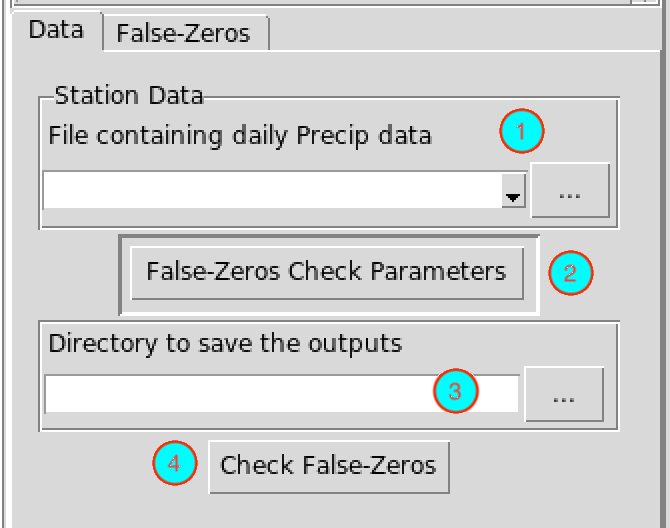
Select from the drop-down list the file containing the station data to be checked if it is already loaded, or open it from the browse button
 on the right.
on the right.Click on this button to set the parameters to be used for the false-zeros check. It displays a dialog box

- (a) Specify the minimum number of neighbor stations to be used.
- (b) Specify the maximum number of neighbor stations to be used.
- (c) Specify the radius of search (in kilometers) to select the neighbor stations.
- (d) Specify the minimum number of days without missing values for each month.
- (e) Specify the minimum threshold to be used to flag that a month contains a false zero. If the ratio of the percentage of zero at the target station and the average of the percentage of zero of the neighbor stations is greater than this threshold the corresponding month is flagged as suspicious.
- Specify the folder to save the results by browsing it from the button or typing the full path to the folder.
- Click the button to execute.
This creates a folder named FALSE.ZEROS.CHECK_data under the folder you provided (4) to save the results of the false zeros check. Inside this folder 2 directories and 1 file are created:
- CDTDATASET: directory containing all the required files used by CDT.
- CDTSTATIONS: directory containing the checked data, when you did a correction for the flagged months. The name of the file containing the corrected data is the same as the name of the file from the input (1).
- FalseZeros.rds: an index file, you will need to reload the outputs of the false zeros check if you want to view the results or to continue the correction later.
The tab False-Zeros allows to view the results of the false zeros check.
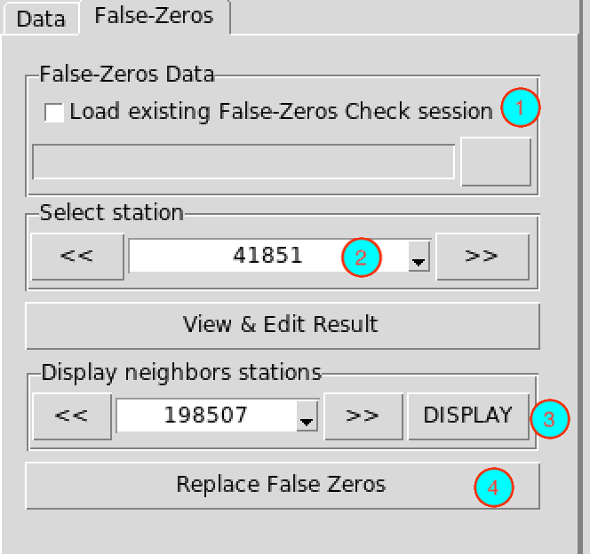
- If you already performed a false zeros check, you do not need to run it again, you can check this box, the input field below will be activated and you can provide the full path to FalseZeros.rds under the folder FALSE.ZEROS.CHECK_data by browsing it through the button on the right.
- The stations with a month containing false zeros are listed here. You can select a station and click on the button to view the results. You can use the buttons or to switch to the previous or next station. It will open a table on the right panel showing the output of the false zeros for the selected station.
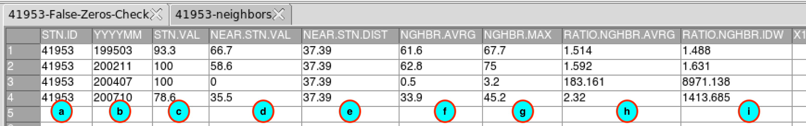
- (a) The ID of the station.
- (b) The months on which false zeros have been suspected.
- (c) The percentage of zero at the target station.
- (d) The percentage of zero for the closest neighbor station.
- (e) The distance in kilometers of the closest neighbor station.
- (f) The average of the percentage of zero for the neighbor stations.
- (g) The maximum value of the percentage of zero for the neighbor stations.
- (h) The ratio of (c) and (f).
- (i) The ratio of (c) and the interpolated percentage of zero of the neighbor stations using the method of weighted inverse distance.
After verifying each month flagged as containing false zeros, if you find that the month does not have false zeros, you can remove it from the table by right-clicking on the column of row number corresponding to this month then from the pop menu click on .
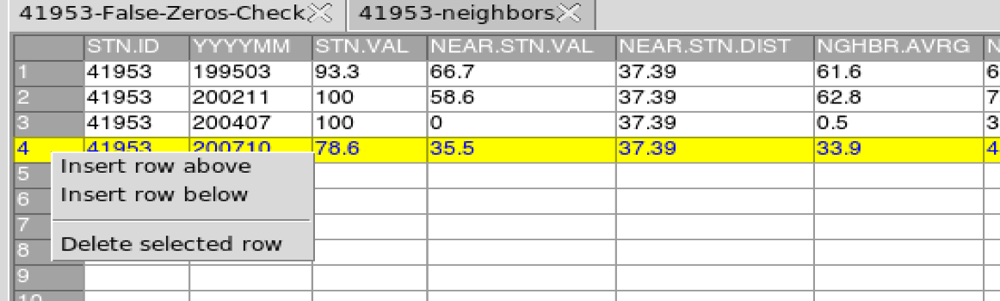
After editing this table, you have to save the changes you made. You can go to the menu or click on the button in the toolbar to save the table. If the table is saved correctly, you should see an output message “Table saved successfully”.
- Select here the date corresponding to a month with false zeros to display the values of the rainfall data at the target station and the neighbor stations for this month. If you select the date from the drop-down list, click on the button to display the table. You can use the buttons and to switch to the previous or next date.
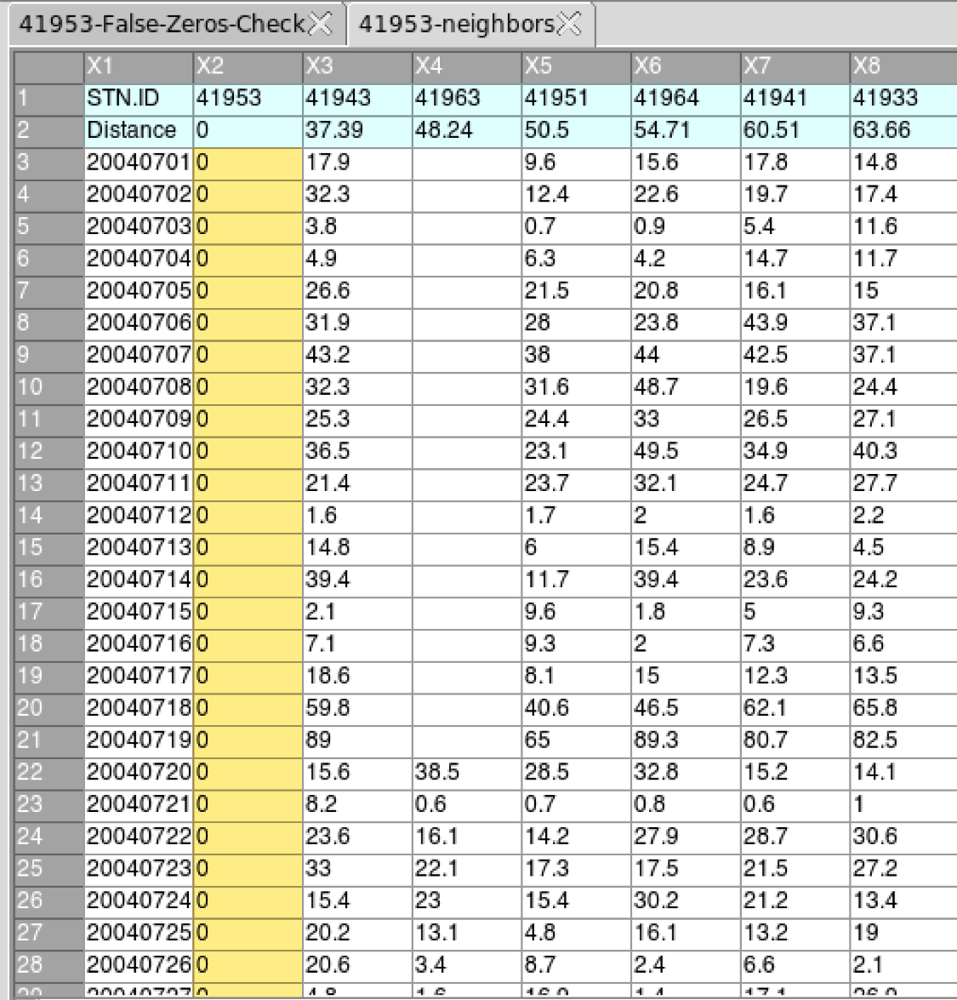
- After saving the changes you made on the table (2), click on the button to replace all the false zeros by missing values.
To replace all the values flagged as suspicious for all stations by missing values, use the following command to the R console:
indexFZ <- "/<path_to>/FALSE.ZEROS.CHECK_data/FalseZeros.rds"
CDT:::FalseZerosCheck_replaceAll(indexFZ, action = "all")Change <path_to> with the exact path. The corrected data are located under the folder FALSE.ZEROS.CHECK_data/CDTSTATIONS.
Outliers check
To check the outliers for rainfall data, use the menu . It will display a tabbed widget on the left panel, allows to enter the inputs data and parameters.
The tab Data allows to enter the inputs data and set the parameters for the QC.
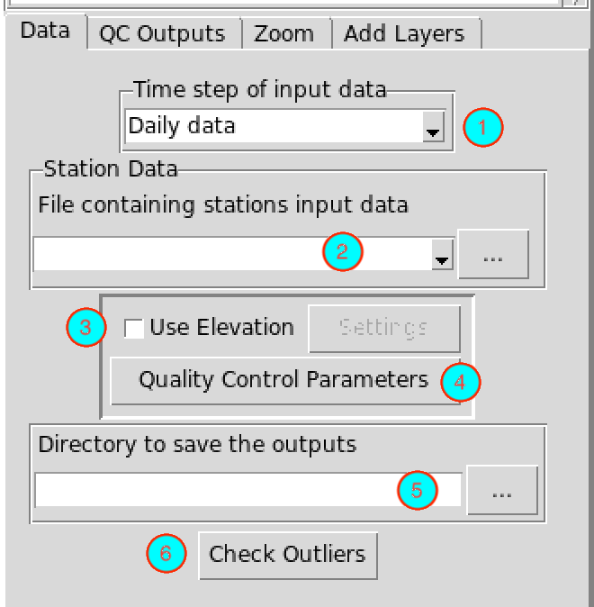
- Select the time step of the station data to be checked.
- Select from the drop-down list the file containing the station data to be checked if it is already loaded, or open it from the browse button on the right.
- If you want to use elevation data to select the neighbor stations, check this box and click on the button , it will display a dialog box which allows to specify the elevation data to be used.
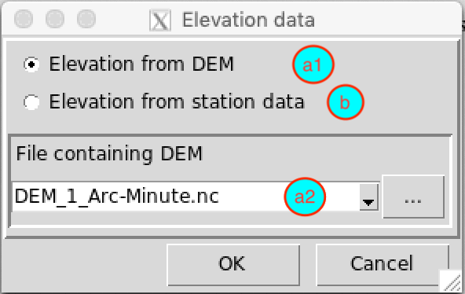
If the elevation data come from DEM (Digital Elevation Model), select (a1), you have to provide the DEM file in (a2) in NetCDF format, select it from the drop-down list if it is already loaded or open it from the browse button . If the elevation data come from the station data select (b).
- Click on this button to set the parameters to perform the outliers check.
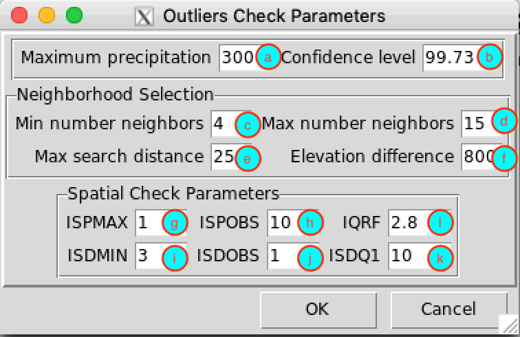
- (a) Specify the maximum possible value of rainfall. It depends on the time step of the input data and the region or country.
- (b) Set the confidence level to perform the temporal check.
- (c) Specify the minimum number of neighbor stations to be used to perform the spatial check.
- (d) Specify the maximum number of neighbor stations to be used to perform the spatial check.
- (e) Specify the radius of search (in kilometers) to select the neighbor stations.
- (d) If using elevation data to select the neighbor stations, specify the maximum altitude difference (in meter) to be used to select the neighbor stations. For example, 800 m means the stations located 400 m above and below the target station will be selected.
- (g) and (h) provide the thresholds to check if the value at the target is an isolated precipitation
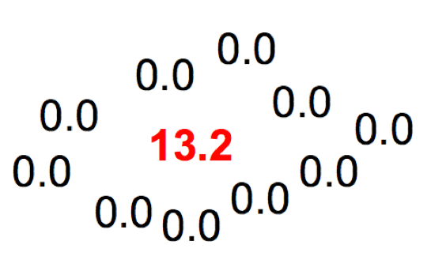
An observation is implausible and called isolated precipitation if this value is extremely suspicious and very large compared to those of neighboring stations and verifies the following conditions
Where
Pmax: maximum value of neighboring stations
Pobs: value of target station
ISPMAX and ISPOBS: values to be provided by the user, depend on the climatology of the region
- (i), (j) and (k) provide the thresholds to check if the value at the target is an isolated dryness
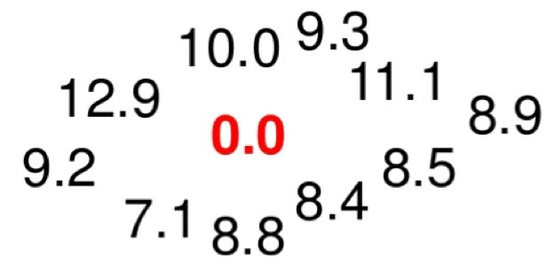
An observation is implausible and called isolated dryness if this value is extremely suspicious and very small compared to those of neighboring stations and verifies the following conditions
Where
Pmin : minimum value of neighboring stations
Pobs : value of target station
P25 : the first quartile of neighboring stations
ISDMIN, ISDOBS and ISDQ1: values to be provided by the user, depend on the climatology of the region
- (l) interquartile range factor (IQRF): a multiplier factor to be provided by the user (usually between 2 and 4, the default value is 2.8) to check the too large deviation values.
To check the deviation of an observation from the values of the neighbor stations, the approach using the Z-score will be applied.
If an observation is strongly deviate to the right-tail (too large deviation above) and stated as implausible if
Where
Pobs : value of target station
Q50 : the median of neighboring stations
IQR : the interquartile range of neighboring stations
IQRF: value to be provided by the user
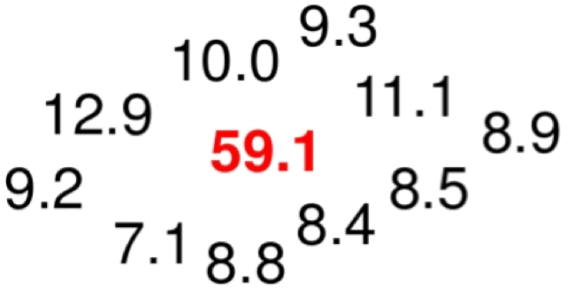
If an observation is strongly deviate to the left-tail (too large deviation below) and stated as implausible if
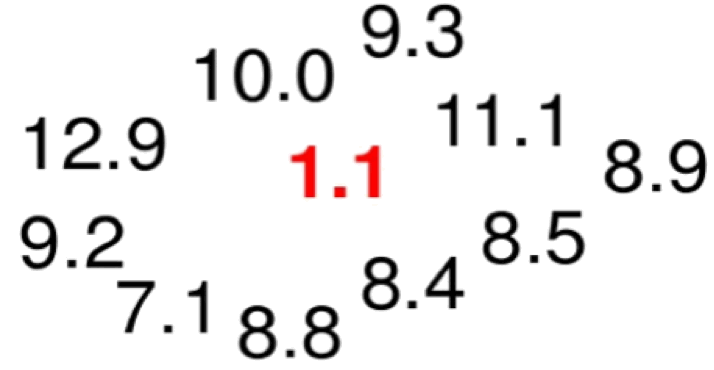
- Type the full path to the folder to save the results of the outliers check, or use the browse button .
- Click the button to run the quality control.
This creates a folder named RR.OUTLIERS.CHECK_data under the folder you provided (5) to save the results of the outliers check. Inside this folder 2 directories and 1 file are created:
- CDTDATASET: directory containing all the required files used by CDT
- CDTSTATIONS: directory containing the checked data, when you did a correction on the suspicious values. The name of the file containing the corrected data is the same as the name of the file from the input (2).
- OutliersCheck.rds: an index file, you will need to reload the outputs of QC if you want to view the results or to continue the correction of suspicious values later.
The tab QC Outputs allows to view the results of the QC
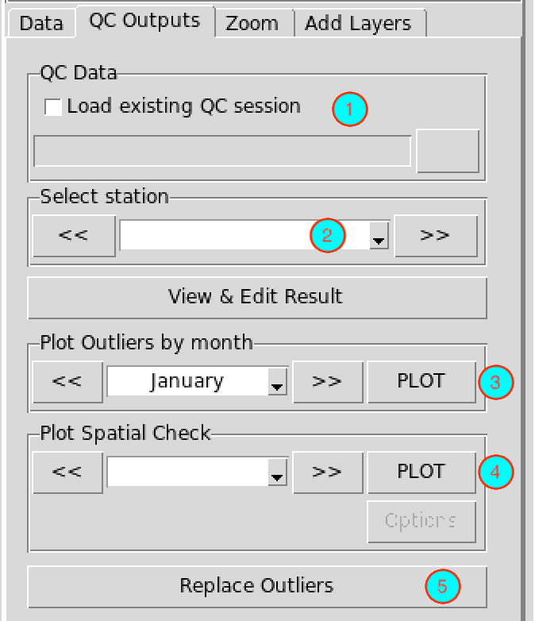
- If you already performed an outliers check, you do not need to run it again, you can check this box, the input field below will be activated and you can provide the full path to OutliersCheck.rds under the folder RR.OUTLIERS.CHECK_data by browsing it through the button on the right.
- The stations with suspicious values are listed here. You can select a station and click on the button to view and edit the result of the QC for this station. You can use the buttons or to switch to the previous or next station. It will open a table on the right panel showing the output of the QC for the selected station.
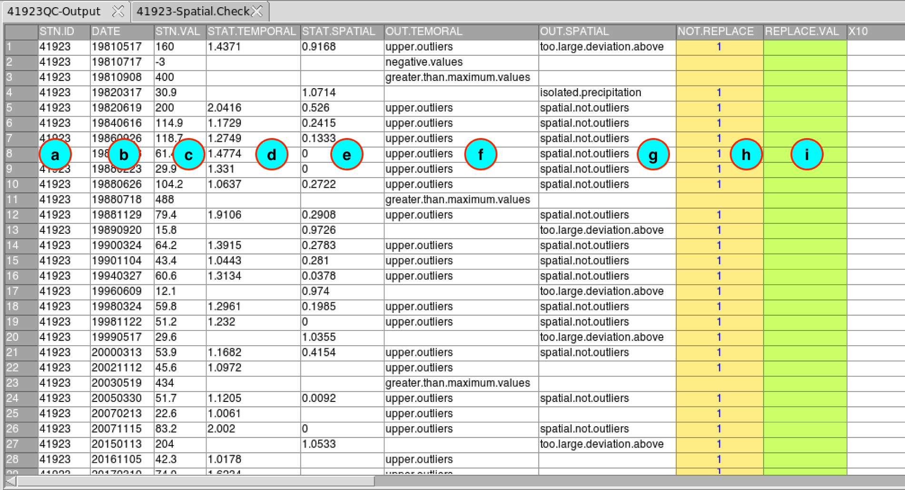
- (a) The ID of the station.
- (b) The dates on which suspicious values are found.
- (c) The observed suspicious values.
- (d) Statistics from the temporal check if available.
- (e) Statistics from the spatial check if available.
- (f) Description of the suspicious value from temporal check.
- negative.values: the value is negative;
- greater.than.maximum.values: the value is greater than the maximum possible value you provided when you set the parameters of the QC;
- upper.outliers: the value is flagged as too large compared to the time series from this month.
- (g) Description of the suspicious value from spatial check.
- spatial.not.outliers: the value is flagged as upper.outliers from the temporal check but not an outlier when a spatial check is performed;
- isolated.precipitation: the value is flagged as isolated precipitation;
- isolated.dryness: the value is flagged as isolated dryness;
- too.large.deviation.above: the value is flagged very high compared to the values of the neighbor stations;
- too.large.deviation.below: the value is flagged very small compared to the values of the neighbor stations.
- (h) You can specify here an action to take when you want to correct the suspicious value. By default, the value in this column is 1, this means no correction will be done. If you put a flag 1 in this column, the corresponding value in column (c) will be kept. If you leave this column blank, the corresponding value in (c) will be replaced by missing value.
- (i) If you put a value in this column, this value will be taken to replace the value in (c). This column takes the priority, whenever you put a flag 1 or leave blank the column (h).
After editing this table, you have to save the changes you made. You can go to the menu or click on the button in the toolbar to save the table. If the table is saved correctly, you should see an output message “Table saved successfully”.
- Select here the month to display a chart of the time series for this month and the suspicious values detected from the temporal check. If you select the month from the drop-down list, click on the button to display the chart. You can use the buttons and to switch to the previous or next month.
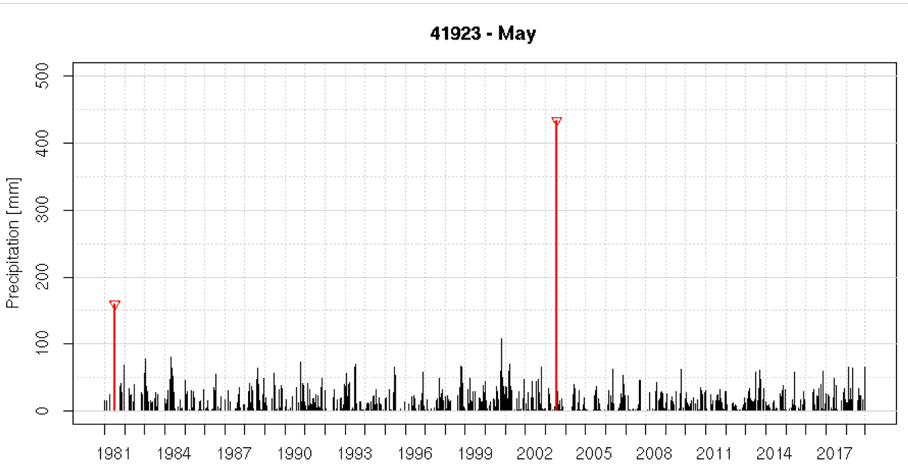
- Select here the date corresponding to a suspicious value to plot it on a map for this date. If you select the date from the drop-down list, click on the button to display the map. You can use the buttons and to switch to the previous or next date.
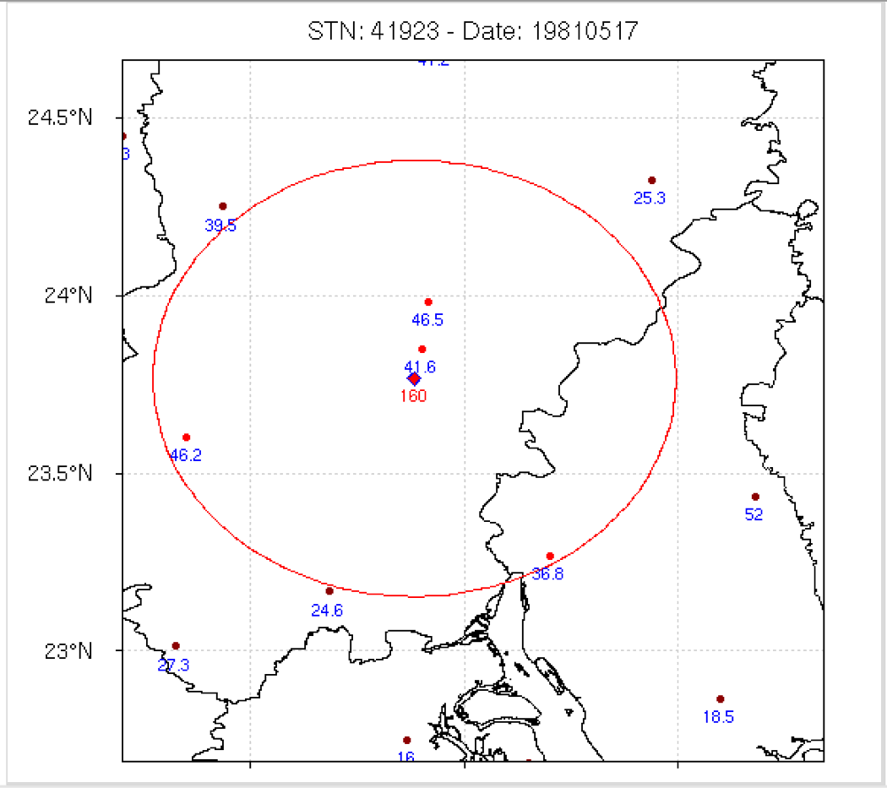
- After saving the changes you made on the table, click on the button for the changes to take effect.
To replace all the values flagged as suspicious for all stations by missing values, use the following command to the R console:
indexQC <- "/<path_to>/RR.OUTLIERS.CHECK_data/OutliersCheck.rds"
CDT:::QC.RR_replaceAll(indexQC, action = "all")Change <path_to> with exact path. The corrected data are located under the folder RR.OUTLIERS.CHECK_data/CDTSTATIONS.
The tab Zoom allows to zoom the displayed map.
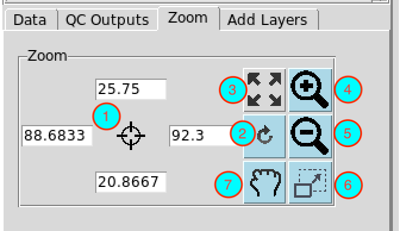
- Enter here the bounding box of the area to be displayed on the map.
- After setting the bounding box (1), click this button for the change to take effect.
- Reset the zoom.
- Zoom in
- Zoom out
- Draw a rectangle on the map to zoom in an area.
- Move the displayed map.
Right click on the map to deactivate the active zoom.
The tab Add Layers allows to superpose other layers.
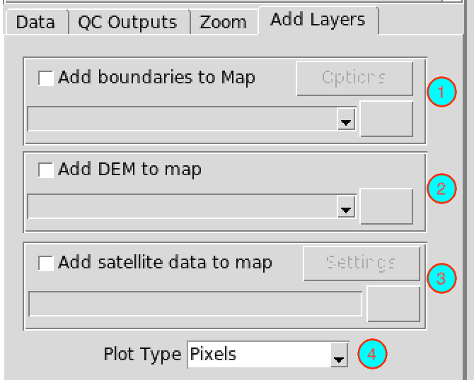
- Check the box and select the shapefile from the drop-down list or open it from to add boundaries to the active map.
- Check the box and select the NetCDF file containing the DEM (Digital Elevation Model) from the drop-down list or open it from to add elevation data as background to the active map.
- Check the box and enter or browse the full path to the NetCDF data (from satellite or radar) to display. Do not forget to provide a sample file and change the filename format by clicking on the button (see Setting NetCDF data for more details).
- Select the type of the map. You can choose between a pixel-based image or a contour map.
Temperatures data
Outliers check
To check the outliers for temperatures data, use the menu . It will display a tabbed widget on the left panel, allows to enter the inputs data and parameters.
The tab Data allows to enter the inputs data and set the parameters for the QC.
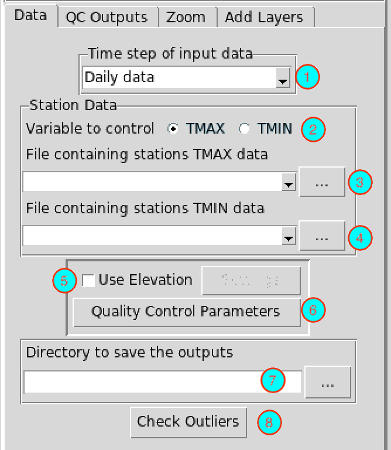
- Select the time step of the station data to be checked.
- Choose the variable to be checked between the maximum and minimum temperature.
- Select from the drop-down list the file containing the station data to be checked if it is already loaded, or open it from the browse button on the right.
- If TMAX is selected in (2), this should be the file containing the maximum temperature.
- If TMIN is selected in (2), this should be the file containing the minimum temperature.
- Select from the drop-down list the file containing the station data to be used to check if the minimum temperature is greater than the maximum.
- If TMAX is selected in (2), this should be the file containing the minimum temperature.
- If TMIN is selected in (2), this should be the file containing the maximum temperature.
- If you want to use elevation data to select the neighbor stations, check this box and click on the button , it will display a dialog box which allows to specify the elevation data to be used.
If the elevation data come from DEM (Digital Elevation Model), select (a1), you have to provide the DEM file in (a2) in NetCDF format, select it from the drop-down list if it is already loaded or open it from the browse button . If the elevation data come from the station data select (b).
- Click on this button to set the parameters to perform the outliers check
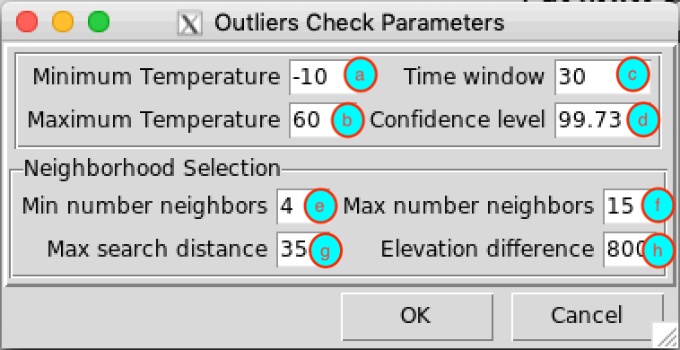
- (a) Specify the minimum possible value of the temperature. It depends on the time step of the input data and the region or country.
- (b) Specify the maximum possible value of the temperature.
- (c) Length of the time window to be used to perform a sliding regression. The unit is days if the input is a daily data.
- (d) Set the confidence level for the test.
- (e) Specify the minimum number of neighbor stations to be used to form the predictors for the regression.
- (d) Specify the maximum number of neighbor stations to be used to form the predictors for the regression.
- (g) Specify the radius of search (in kilometers) to select the neighbor stations.
- (h) If using elevation data to select the neighbor stations, specify the maximum altitude difference (in meter) to be used to select the neighbor stations. For example, 800 m means the stations located 400 m above and below the target station will be selected.
- Type the full path to the folder to save the results of the outliers check, or use the browse button .
- Click the button to run the quality control.
This creates a folder named TMAX.OUTLIERS.CHECK_data or TMIN.OUTLIERS.CHECK_data under the folder you provided (7) to save the results of the outliers check. Inside this folder 2 directories and 1 file are created:
- CDTDATASET: directory containing all the required files used by CDT
- CDTSTATIONS: directory containing the checked data, when you did a correction on the suspicious values. The name of the file containing the corrected data is the same as the name of the file from the input (3).
- OutliersCheck.rds: an index file, you will need to reload the outputs of QC if you want to view the results or to continue the correction of suspicious values later.
The tab QC Outputs allows to view the results of the QC.
- If you already performed an outliers check, you do not need to run it again, you can check this box, the input field below will be activated and you can provide the full path to OutliersCheck.rds under the folder TMAX.OUTLIERS.CHECK_data or TMIN.OUTLIERS.CHECK_data by browsing it through the button on the right.
- The stations with suspicious values are listed here. You can select a station and click on the button to view and edit the result of the QC for this station. You can use the buttons or to switch to the previous or next station. It will open a table on the right panel showing the output of the QC for the selected station.
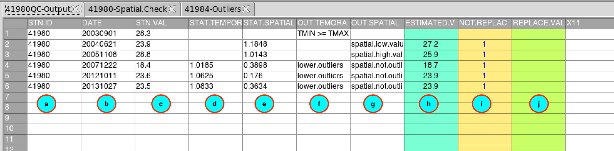
- (a) The ID of the station.
- (b) The dates on which suspicious values are found.
- (c) The observed suspicious values.
- (d) Statistics from the temporal check if available.
- (e) Statistics from the spatial check if available.
- (f) Description of the suspicious value from temporal check.
- lower.values: the value is flagged as too small compared to the time series from this month;
- upper.outliers: the value is flagged as too large compared to the time series from this month;
- TMIN >= TMAX: the minimum temperature is greater than the maximum temperature;
- greater.than.maximum.values: the value is greater than the maximum possible value you provided when you set the parameters of the QC;
- less.than.minimum.values: the value is less than the minimum possible value specified.
- (g) Description of the suspicious value from spatial check.
- spatial.not.outliers: the value is flagged as outlier from the temporal check but not an outlier when a spatial check is performed;
- upper.outliers: the value is flagged very high compared to the values of the neighbor stations;
- lower.outliers: the value is flagged very small compared to the values of the neighbor stations.
- (h) The estimated value from the regression.
- (i) You can specify here an action to take when you want to correct the suspicious value. By default, the value in this column is 1, this means no correction will be done. If you put a flag 1 in this column, the corresponding value in column (c) will be kept. If you put a flag 2, the corresponding value in column (c) will be replaced by the estimated value in column (h). If you leave this column blank, the corresponding value in (c) will be replaced by missing value.
- (j) If you put a value in this column, this value will be taken to replace the value in (c). This column takes the priority, whenever you put a flag 1, 2 or leave blank the column (i).
After editing this table, you have to save the changes you made. You can go to the menu or click on the button in the toolbar to save the table. If the table is saved correctly, you should see an output message “Table saved successfully”.
- Select here the month to display a chart of the time series for this month and the suspicious values detected from the temporal check. If you select the month from the drop-down list, click on the button to display the chart. You can use the buttons and to switch to the previous or next month.
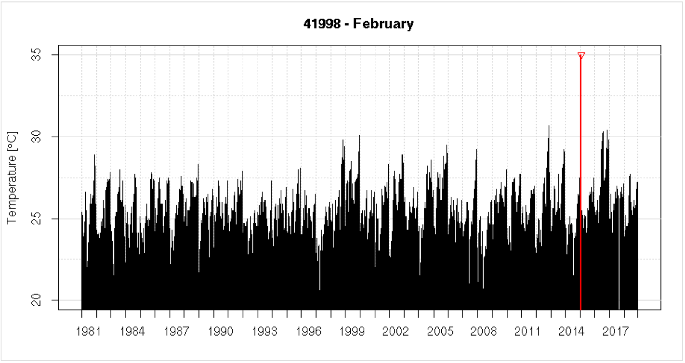
- Select here the date corresponding to a suspicious value to plot it on a map for this date. If you select the date from the drop-down list, click on the button to display the map. You can use the buttons and to switch to the previous or next date.
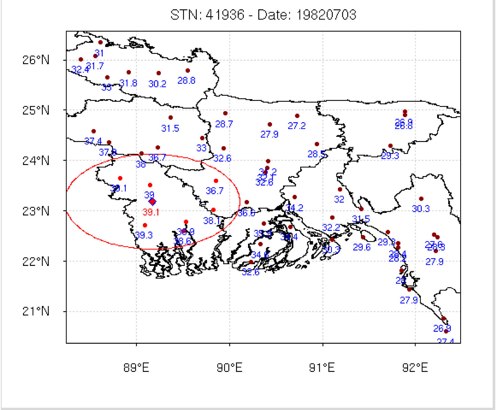
- After saving the changes you made on the table, click on the button for the changes to take effect.
To replace all the values flagged as suspicious for all stations by missing values, use the following command to the R console:
indexQC <- "/<path_to>/TMAX.OUTLIERS.CHECK_data/OutliersCheck.rds"
CDT:::QC.TT_replaceAll(indexQC, action = "all")Change <path_to> with exact path. The corrected data are located under the folder TMAX.OUTLIERS.CHECK_data/CDTSTATIONS.
You can do the same for the minimum temperature by replacing TMAX by TMIN.
The tab Zoom allows to zoom the displayed map.
- Enter here the bounding box of the area to be displayed on the map.
- After setting the bounding box (1), click this button for the change to take effect.
- Reset the zoom.
- Zoom in
- Zoom out
- Draw a rectangle on the map to zoom in an area.
- Move the displayed map.
Right click on the map to deactivate the active zoom.
The tab Add Layers allows to superpose other layers.
- Check the box and select the shapefile from the drop-down list or open it from to add boundaries to the active map.
- Check the box and select the NetCDF file containing the DEM (Digital Elevation Model) from the drop-down list or open it from to add elevation data as background to the active map.
- Check the box and enter or browse the full path to the NetCDF data (from satellite or radar) to display. Do not forget to provide a sample file and change the filename format by clicking on the button (see Setting NetCDF data for more details).
- Select the type of the map. You can choose between a pixel-based image or a contour map.